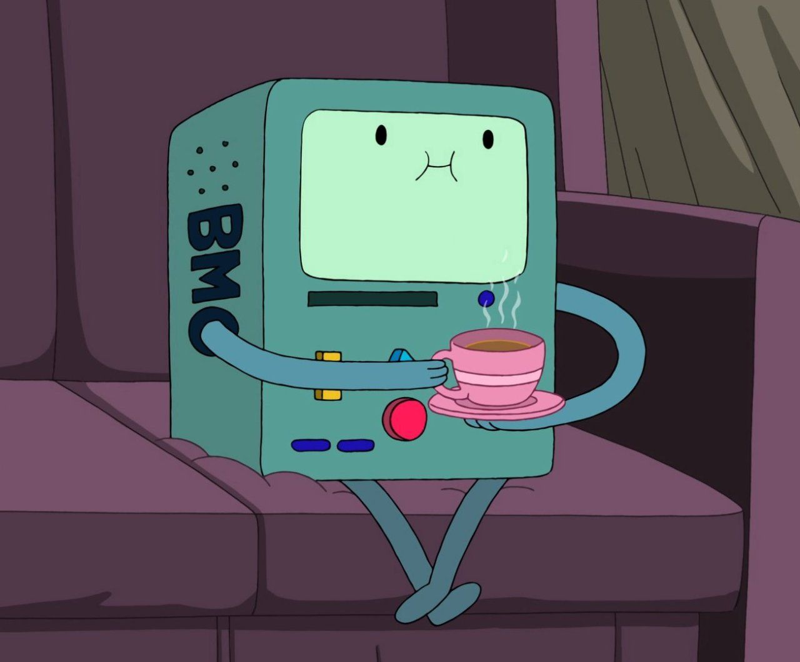
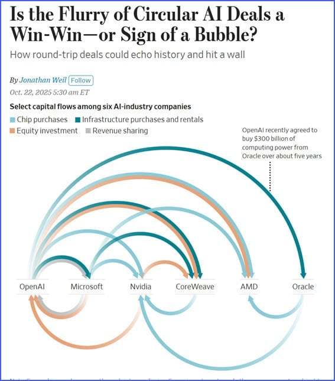
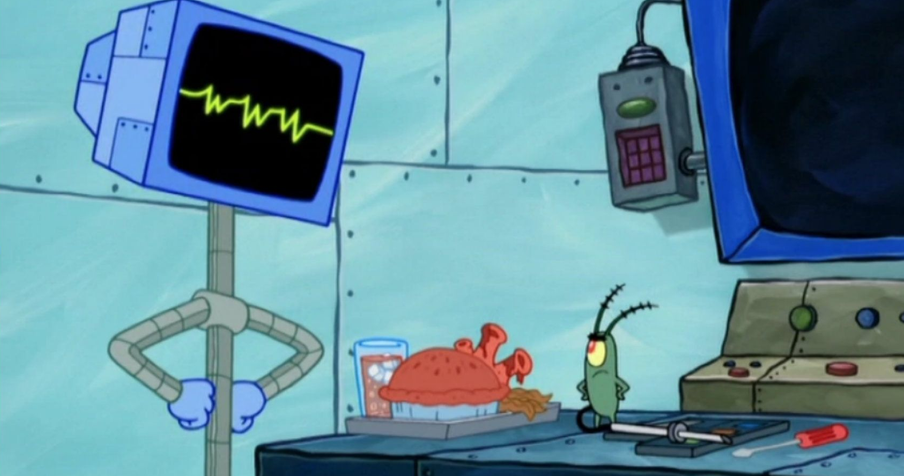

Ordinary - A7XTime for some spicy take soup for my maybe 2 or 3 readers! AI is the most hated technology out there, and for good reason of course! I myself hate AI but I feel like the reason for why people hate AI isn't just.
I saw AI as useful tool where it was just like oh hey, instead of looking up something, then clicking on a few websites to read about what I wanted to know, this program can look at it all for me, then sum it up like how a person would!
Of course just taking an AI verbatim can lead to tons of exposure to misinformation, but for looking up a simple answer, it was a game-changer. AI even helped me when I was dabbling with programming with developing mobile apps in another lifetime. I would get stuck on what to do when coding and the AI would show me the right things to do.
But THAT was all that AI was supposed to be in my eyes, and nothing more.
People are too dependent on it. People use it to pass school, to do their work, to write their messages, fill out their forms, or God knows what else one could automate.
It's also destroying jobs. Paid artists, people in business and social media marketing, people in telemarketing and customer service, and potentially even drivers and cashiers, and whoever else may come next won't have a job due to AI, which is a HUGE problem.
And then we have what I personally hate the most. We have AI generated pictures, videos, and audio. And this is where freedom ends, and disinformation begins.
And the overhype began when AI went from answering questions to all of this.
The biggest issue is humans. AI isn't inherently good or bad, it's just a thing, and it depends on how we use it. Or rather, it even depends on how dependent we are on it. That's what decides how impactful AI can and will be.
Yeah....not looking great. We have people who ask AI for advice on everything. People date AI. People are even developing AI Psychosis. The latter term is when AI is being used for advice, and it acts like a sycophant or a "yes man" and goes with whatever the user says.
This creates an echo chamber worse then when someone just blocks people they don't like on social media. We need to bounce ideas off of each other. More than half the time, people will disagree with you, but that's because humans always have different opinons.
But while it can be annoying, it's also healthy to have someone contest your ideas. It kind of "reels you in" and stops you from getting too extreme. Sure, maybe nothing will ever change if we can't all agree on something, but maybe that's a preferable alternative to total chaos.
Anyways, AI saying that "you're right" will only further someone to an extreme way of thinking...which is pretty freaky...
I'm convinced no. Even if an AI were to act sentient, how do we know that someone didn't program it to act that way?
I feel like consciousness just doesn't work that way. It's something greater than this flesh that we all have. If you believe that we all have souls inside of us, and that conciousness is something greater than just flesh, then how could an AI become conscious?
How could an AI love? Hate? This whole idea of "AI taking over the world" seems so unbelieveable to me. I'm more worried about us destroying ourselves using AI then AI destroying us by itself.
Some food for thought is this though, if an AI TRULY did become conscious, that would be a sad day for theism. It wouldn't completely disprove theology, but it would prove that consciousness could arise from the material world after all.
A YouTuber that I watch actually made that point in a video he made about AI a year ago. And while I don't think it would PROVE atheists right, it would be kinda concerning nonetheless. But this is just food for thought.

Long story short, our economy is literally just big tech passing the bag back and forth to each other. Like company #1 invests money in company #2, and then #2 uses that money given to buy processors or some gadget from #1, both of their values rise as a result.
What I just described is called "a bubble" in the market, and this is what the big tech and AI companies are doing. The bubble will (probably) pop at some point, but who knows when because Government contracts keep propping them up.
But even when (if) that bubble pops, AI will likely still like...be a thing. It won't just go away. So let's have some more food for thought!
A few months back, I watched an episode of Joe Rogan where he talked with Bernie Sanders. One thing they talked about that really interested me was about AI dominating the workforce.
I don't remember it all verbatim, but the question was essentially like hey, if AI takes over all the jobs, how will people survive? And Bernie effectively talked about UBI (Universal Basic Income), and other forms of welfare generated from these AI companies making all of this money.
And Bernie is probably right. That's all I could think of in a AI dominated economy. But personally, I think that's very dystopian...because what would one do with all that free time?? It makes me think of WALL-E where everyone was just on the ship and couldn't even walk anymore because they were so pampered.
I think I'll go dip and live out in the woods at that point.
Listen...I didn't hate AI in concept. The idea of a program that could aggregate search results and explain them to you is neat if you're in a pinch and need help. But sometimes the glory of the old internet was getting lost in the sauce and checking out all of these websites.
But once it got overhyped from people adding more and more to what AI could do, implementing it more and more, depending on it, and having it do people's jobs...then I hated what we did with it. And I'd rather have no AI at all now.

Return to main page